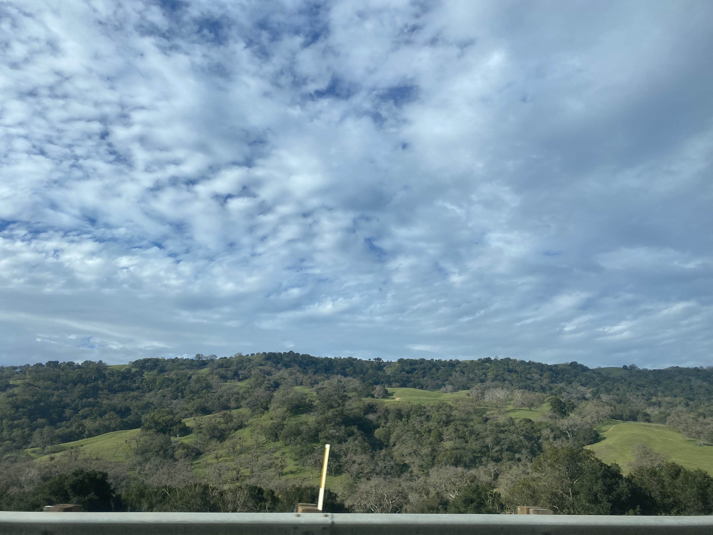
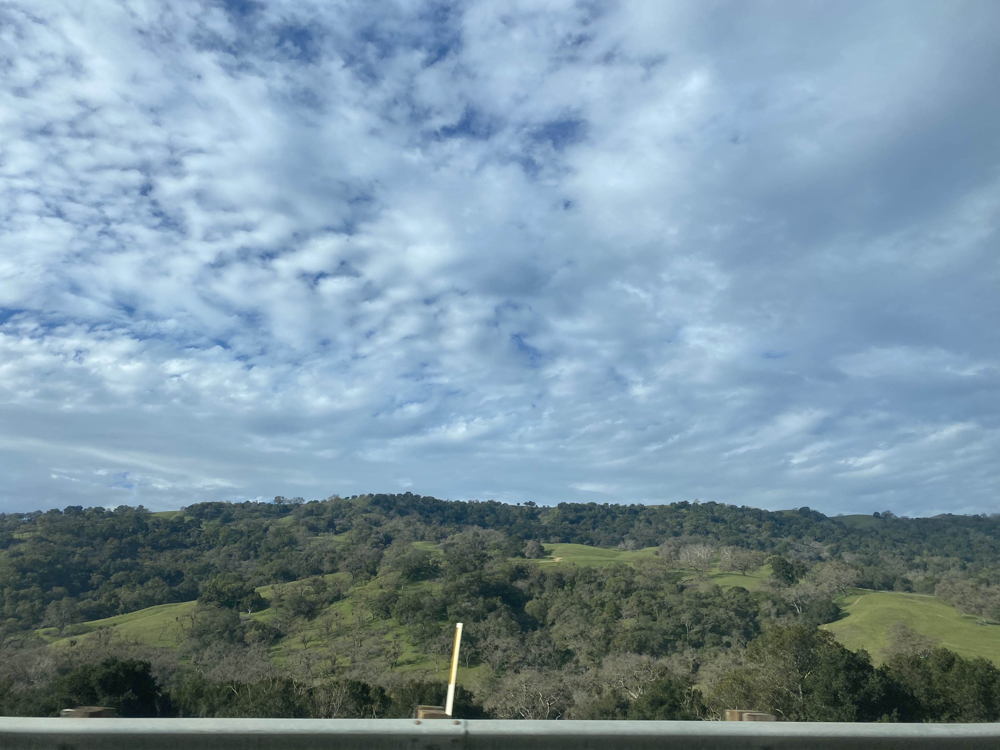
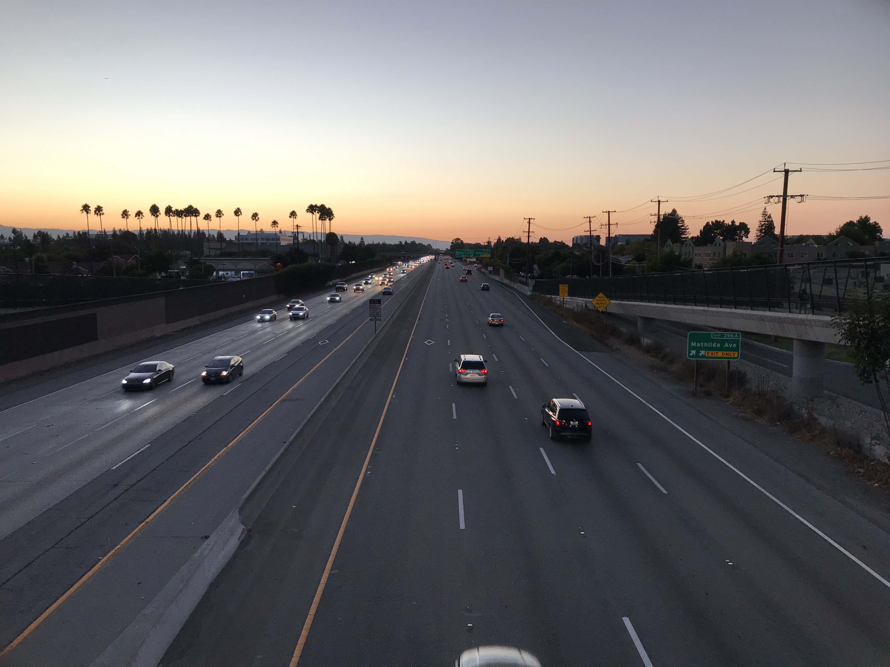
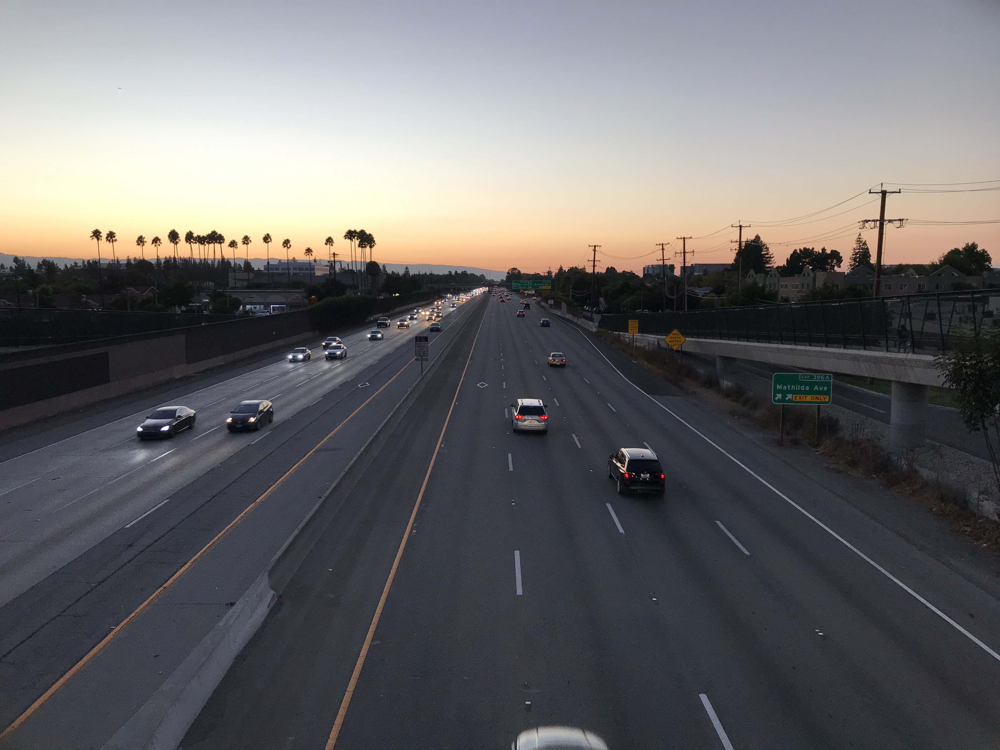

{kind=link}


Santa Cruz Mountains 📍 LHS, San Jose, California Santa Cruz Mountains 📍 LHS, San Jose, California


Steven's Canyon Road 📍 Stevens Canyon County park, California Santa Cruz Mountains 📍 Steven's Canyon, California


Hunter's point 📍 Hunter's point, California Palo Alto Hills 📍 Pearson-Arastradero Preserve, California


Santa Cruz Mountains 📍 Fremont Older, California Sunset over Santa Cruz Mountains 📍 Hunter's Point, California

Sunset over Santa Cruz Mountains 📍 Fremont Older, California Overlooking San Jose 📍 Hunter's Point, California


Sunset over Santa Cruz Mountains 📍 Fremont Older, California Overlooking San Jose 📍 Hunter's Point, California
 

Moon 📍 San Jose, California Mountains from I-680 📍 California
Tree 📍 Fremont Older, California Overlooking San Jose 📍 Fremont Older, California

Sunset over Santa Cruz Mountains 📍 Fremont Older, California Mountains 📍 Baylands Park, California
 

Mountains 📍 Baylands Park, California Ca-237 📍 Some Bridge near Baylands park


Overlooking San Jose 📍 Hunter's Point, California Santa Cruz Mountains 📍 Hunter's Point, California


Overlooking San Jose 📍 Hunter's Point, California Overlooking San Jose 📍 Hunter's Point, California


Sunset in San Jose 📍 Fremont Older, California I-280 📍 Pearson-Arastradero Preserve, California


Green Field 📍 Pearson-Arastradero, California Overlooking Hunter's point 📍 Stevens Canyon, California